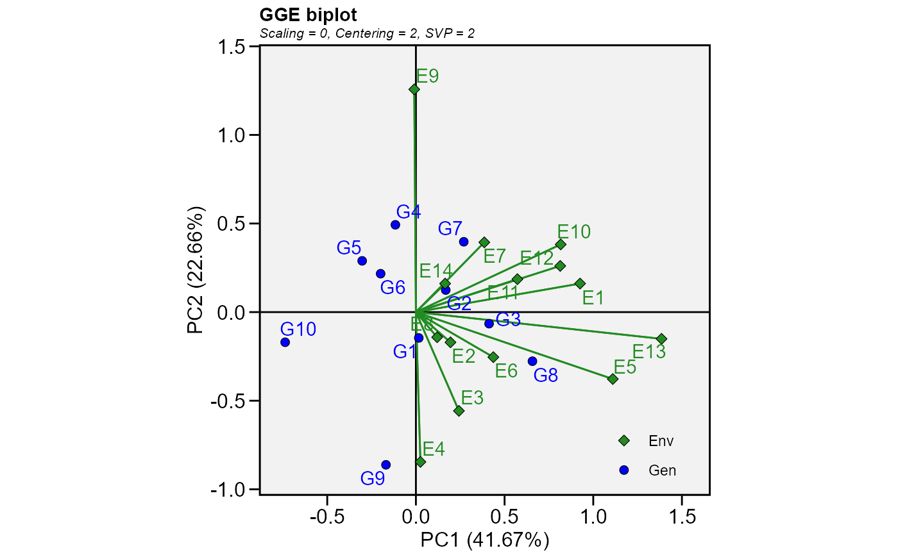
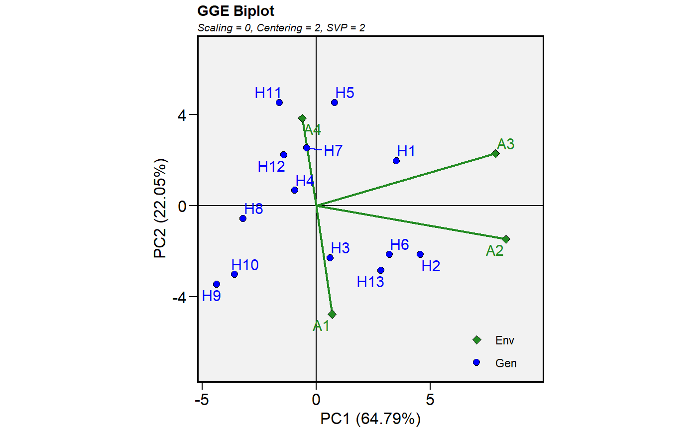
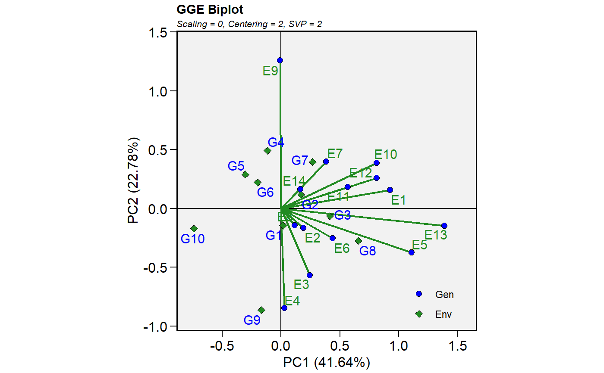

Produces genotype plus genotype-by-environment model based on a multi-environment trial dataset containing at least the columns for genotypes, environments and one response variable or a two-way table.
gge( .data, env, gen, resp, centering = "environment", scaling = "none", svp = "environment", ... )
| .data | The dataset containing the columns related to Environments, Genotypes and the response variable(s). |
|---|---|
| env | The name of the column that contains the levels of the environments. |
| gen | The name of the column that contains the levels of the genotypes. |
| resp | The response variable(s). To analyze multiple variables in a
single procedure a vector of variables may be used. For example |
| centering | The centering method. Must be one of the |
| scaling | The scaling method. Must be one of the |
| svp | The method for singular value partitioning. Must be one of the |
| ... | Arguments passed to the function
|
The function returns a list of class gge containing the following objects
coordgen The coordinates for genotypes for all components.
coordenv The coordinates for environments for all components.
eigenvalues The vector of eigenvalues.
totalvar The overall variance.
labelgen The name of the genotypes.
labelenv The names of the environments.
labelaxes The axes labels.
ge_mat The data used to produce the model (scaled and centered).
centering The centering method.
scaling The scaling method.
svp The singular value partitioning method.
d The factor used to generate in which the ranges of genotypes and environments are comparable when singular value partitioning is set to 'genotype' or 'environment'.
grand_mean The grand mean of the trial.
mean_gen A vector with the means of the genotypes.
mean_env A vector with the means of the environments.
scale_var The scaling vector when the scaling method is 'sd'.
Yan, W., and M.S. Kang. 2003. GGE biplot analysis: a graphical tool for breeders, geneticists, and agronomists. CRC Press.
# GGE model for all numeric variables mod2 <- gge(data_ge2, ENV, GEN, resp = everything()) plot(mod2, var = "ED")# If we have a two-way table with the mean values for # genotypes and environments table <- make_mat(data_ge, GEN, ENV, GY) %>% round(2) table#> E1 E10 E11 E12 E13 E14 E2 E3 E4 E5 E6 E7 E8 E9 #> G1 2.37 2.31 1.36 1.34 3.00 1.53 3.04 4.08 3.49 4.17 2.81 1.90 2.27 2.78 #> G10 1.97 1.54 0.90 1.02 1.83 1.86 3.15 4.11 4.27 3.37 2.48 2.24 2.70 3.15 #> G2 2.90 2.30 1.49 1.99 3.03 1.43 3.23 4.57 3.72 3.83 2.54 1.99 2.05 3.36 #> G3 2.89 2.34 1.57 1.76 3.47 2.06 3.61 4.13 4.13 4.13 2.98 2.16 2.85 3.29 #> G4 2.59 2.17 1.37 1.53 2.64 1.86 3.19 3.85 3.30 3.78 2.70 1.98 2.30 3.72 #> G5 2.19 2.14 1.33 1.69 2.57 1.78 3.14 3.74 3.38 3.47 2.43 1.66 2.71 3.30 #> G6 2.30 2.21 1.50 1.39 2.91 1.80 3.29 3.43 3.40 3.57 2.34 1.76 2.54 3.04 #> G7 2.77 2.44 1.36 1.95 3.18 1.94 2.61 4.10 3.02 4.05 2.67 2.55 2.58 3.14 #> G8 2.90 2.57 1.68 2.00 3.52 1.99 3.44 4.11 4.14 4.81 2.91 2.26 2.88 2.83 #> G9 2.33 1.74 1.13 1.41 2.95 1.57 3.09 4.51 3.90 3.93 2.77 1.39 2.49 1.94# }